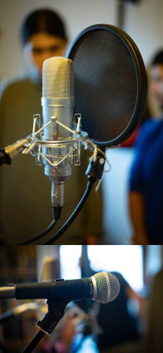

V rámci testovacího nahrávání byla autorem a konzultantem vyzkoušena veškerá technická zařízení – mikrofony, zvuková karta či konkrétní editovací program Cubase Elements 12. Mikrofony byly vystaveny hlasům z různých vzdáleností. Tím se do zvuku dostal větší prostor a výsledná nahrávka tak působí přirozeněji. Autorovým záměrem bylo, aby výsledná nahrávka působila jako audiostopa divadelní hry, nikoli jako čtená audiokniha, myšlený prostor ve zvuku byl tedy žádoucí.
K nahrávání byly použity dva paralelně snímající mikrofony:
- Kondenzátorový mikrofon Golden Age FC 1 MK II s pop filtrem
- Dynamický mikrofon Shure SM57
